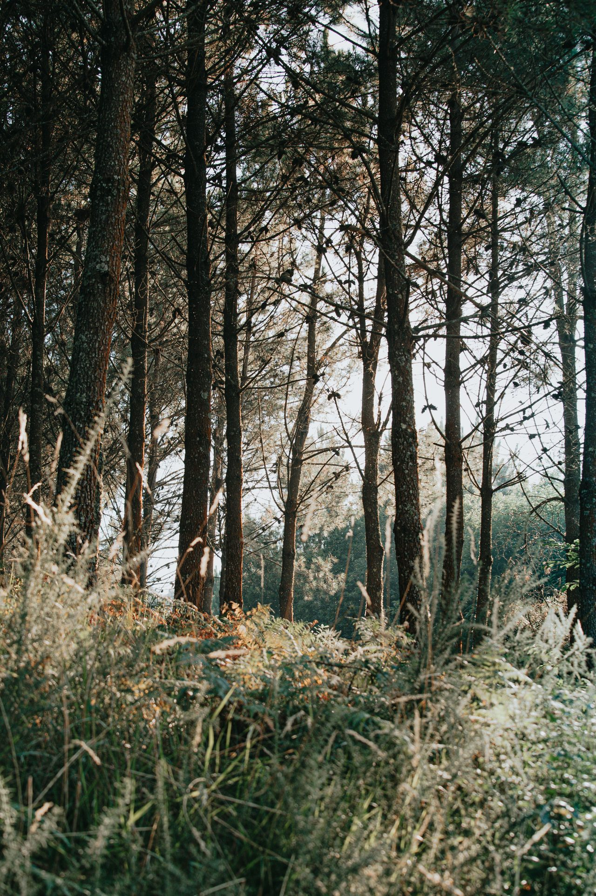
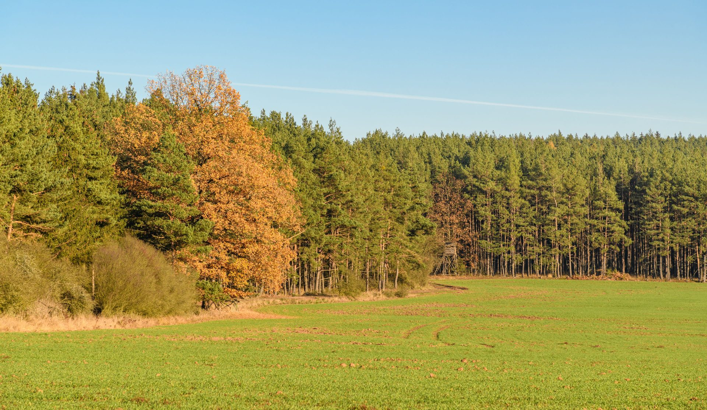
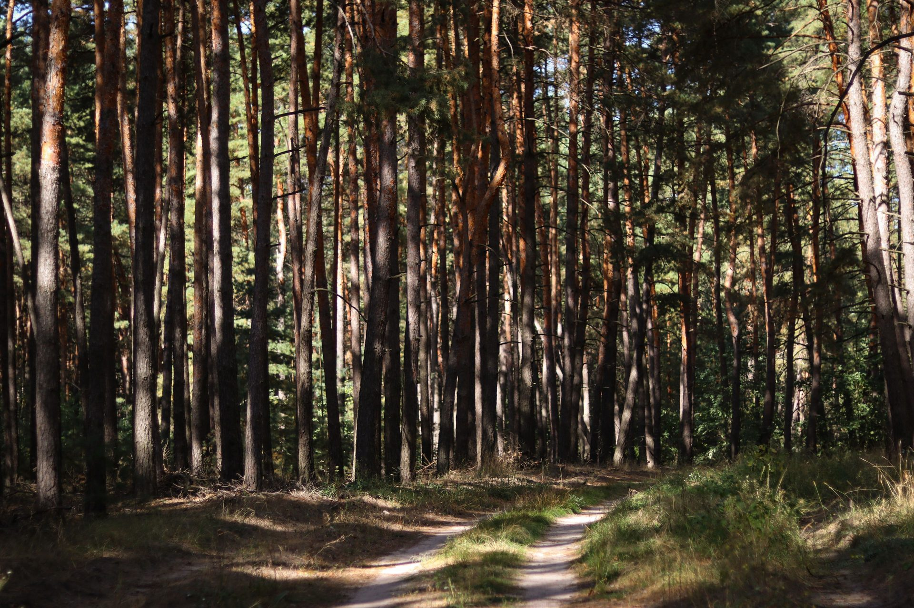
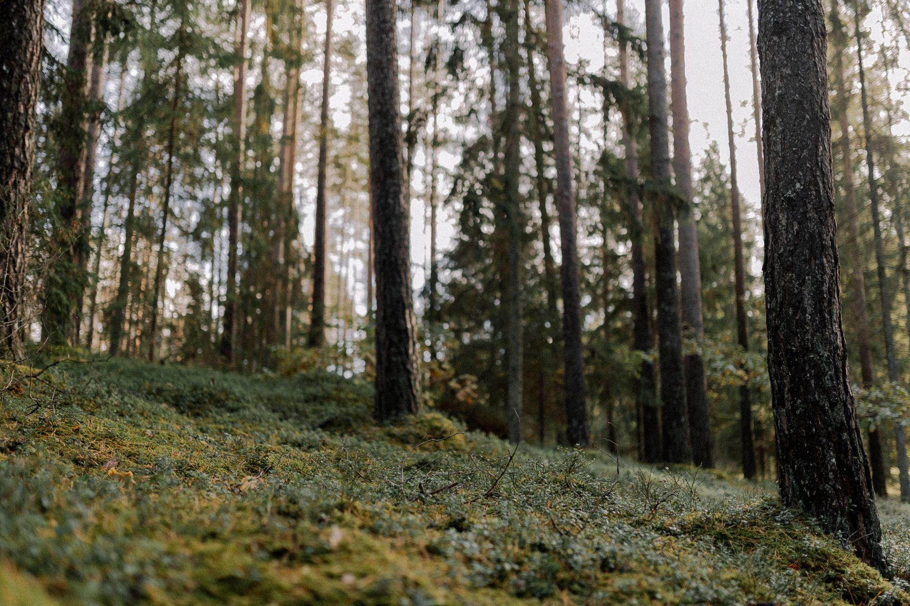
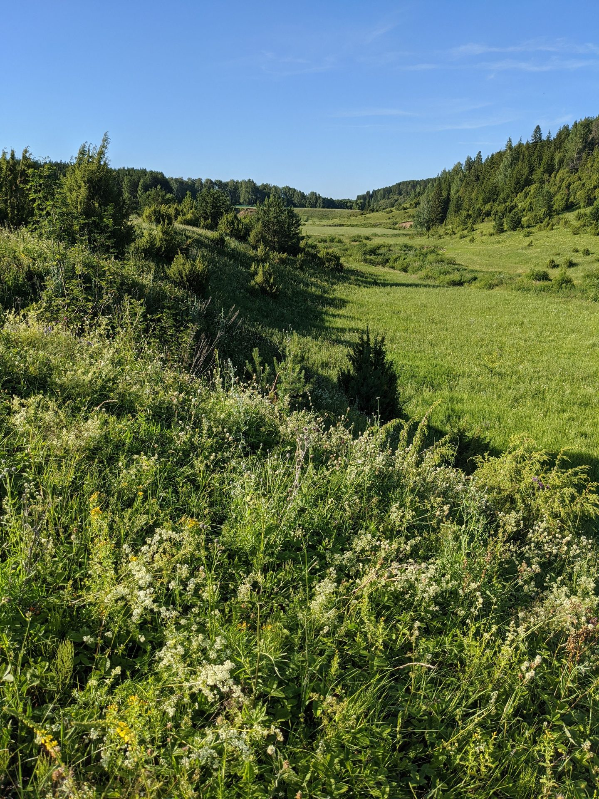
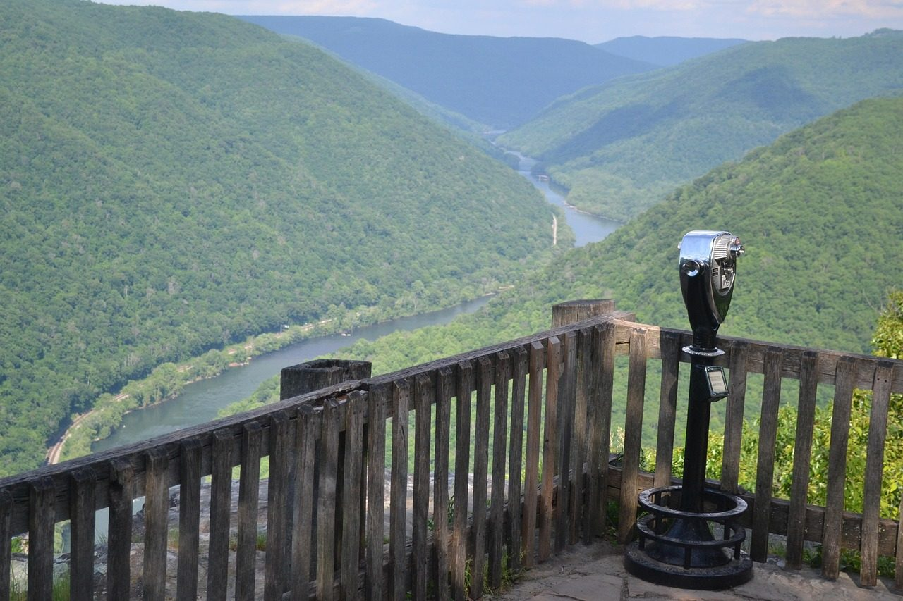
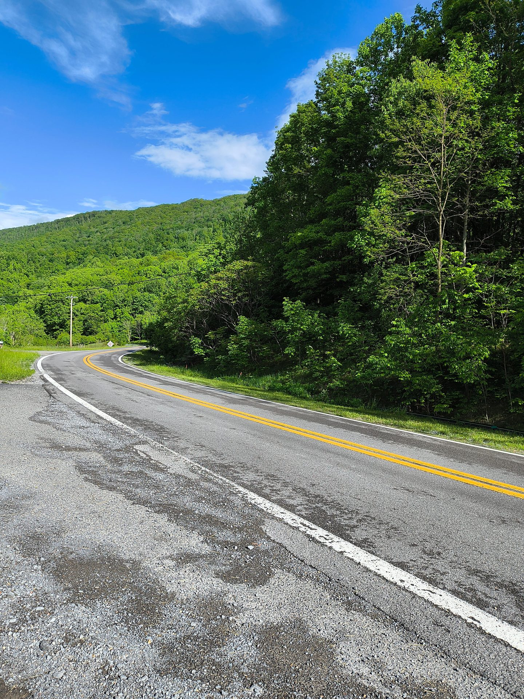

Home sites, shops, and barn pads
Open a wooded parcel for a house, a shop, or a barn pad. The crew can clear the footprint and leave shade trees or a tree line you want to keep.
North Central West Virginia
Need brush cleared off a wooded lot, a trail opened, or land prepared for a house or pasture? Request a quote and a local crew will follow up.
Services
Most work in this part of West Virginia is for overgrown lots, underbrush in the woods, a path to a building site, or land that has grown in after years without mowing. Tell the crew what you want the ground to be ready for.

Clear underbrush, briars, and overgrown edges so you can walk the property and see what is in the timber.
Brush clearing in this area
Open a wooded lot or a driveway path for a house, a shop, or a building pad, and leave the trees you want to keep.
Lot clearing details
Cut a trail, a fence line, or an access path through timber for walking, hunting land, or a future driveway.
Trail clearing
Take out undergrowth and unwanted trees while leaving mature timber, a view, or a shaded yard intact.
Selective clearing
Mulch autumn olive, multiflora rose, and other thick, woody growth that has taken over a field or a wooded edge.
Invasive clearingWhat the work is for
Landowners around Morgantown, Fairmont, Bridgeport, and Clarksburg request forestry mulching when a wooded lot, an overgrown field, or a tight path needs to become usable ground. Choice trees can be kept, and the rest is mulched in place so the property is ready for what comes next.
Open a wooded parcel for a house, a shop, or a barn pad. The crew can clear the footprint and leave shade trees or a tree line you want to keep.
Cut a driveway path or a lane into a lot so you can reach a building site, a back field, or the rest of the property in any season.
Reclaim a field or pasture that has grown in with saplings, briars, and brush, so the ground can be grazed, hayed, or maintained again.
Open trails on hunting land, clear access to a stand or a blind, and prepare spots for food plots without taking the whole timber down.
Get a property ready to list or show by clearing overgrowth along the road, opening the lot, and making the ground easier to walk and photograph.
Clear brush and small trees around a house, a shop, or an outbuilding so you can see the edges of the property and keep growth off the structure.
Open a fence line that has grown shut, so you can repair, replace, or walk the boundary without fighting thick brush.
Clear a path for a power line, a well, a septic area, or other site utilities, and leave the rest of the lot as you want it.
How a quote works
01
Send the form with your town, a rough acreage, the type of property, and how a machine would get in. Photos of the growth and the slope help.
02
A local crew follows up, looks at the land, and gives you a price before any mulching starts. Ask about insurance and licensing on that follow-up.
03
Once you approve the plan, brush and smaller trees are ground in place. The chips usually stay on the ground unless you want material hauled.
Service area
Those four towns are the focus, with nearby communities in Monongalia, Marion, and Harrison Counties included. Kingwood and Grafton can be a fit as well.

Forestry mulching and land clearing for Morgantown, Westover, Star City, Granville, and Cheat Lake.
Morgantown land clearingForestry mulching and land clearing for Fairmont, Pleasant Valley, White Hall, and the rest of Marion County.
Fairmont land clearingForestry mulching and lot clearing for Bridgeport and nearby Harrison County towns.
Bridgeport land clearing
Forestry mulching and land clearing for Clarksburg, Nutter Fort, Anmoore, and Shinnston.
Clarksburg land clearingQuestions
Free quote
Share a few details and a local crew can follow up. Photos help, especially if you can show the growth, the slope, and how a machine would get in.
FORM_ENDPOINT_PLACEHOLDER needs to be replaced when a renter is assigned.